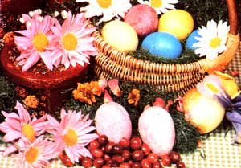

You can make these holiday beauties by usingdye materials from field, forest, and Am
Springtime is traditionally a season to be spent appreciating the new life that appears all around us and renewing our ties with nature ... and it's especially fitting to celebrate spring's arrival by dyeing Easter eggs with natural tints. After all, coloring doesn't have to come out of a box: In fact, a couple of generations back, folks couldn't buy "quick-fizz" dyes. Instead, most of them gathered familiar materials (berries, roots, twigs, fruits, vegetables, and flowers) with which to color their Easter treats ... and if you do the same, you'll be able to develop a wide range of subtle, earthy colors to make your "rites of spring" truly appropriate to the season.
The basic method for preparing a natural dye is to chop up whatever ingredient you've chosen and put the pieces, with enough water to cover them, in a stainless steel or enamel pan. Don't use aluminum utensils ... the chemical reaction could inhibit the effect of the dye. [EDITOR'S NOTE: Many wholistic health experts believe that cooking should never be done in aluminum.] Next, add a teaspoon of vinegar to each pot of color you're concocting (except any made with onions) to help the dye adhere to and permeate the eggshell.
At this point, you can proceed by either of two methods: If you want to color your Easter decorations as speedily as possible, simply place fresh eggs right in with the dye fixin's, bring the pot to a boil, and allow the orbs to simmer for about 20 minutes. This way, the eggs will cook and color at the same time. If you prefer, though, you can put the dye materials alone through the same 20-minute brewing process, then strain out the solids and (using a slotted spoon) lower the eggs - which you've hard-cooked, drained, and allowed to dry while the dye was simmering - into the "broth". Either way, of course, the longer you let the eggs stand in the solution, the deeper their hue will be.
Should you want to decorate your Easter charms with more than just color, you can arrange fresh leaves and flowers on their surfaces and wrap them in cheesecloth-or draw designs and messages on their shells with wax- before dipping them into a dye. (See MOTHER NO. 62, page 89 for further details on how to imprint such designs on Easter eggs.)
One thing to be aware of when using any natural coloring materials is that the shades produced will likely not be as brilliant as those hues that come from packaged dyes. So don't be disappointed by muted results ... instead - with a little experimentation go on to turn out a whole basketful of softly colored eggs. The following time-tested "recipes" can provide you with general guidelines, but once you've begun to experiment with plant dyes, you'll probably want to branch out and try some of your own concoctions.
You can produce varying shades of red, from pastel pink to dark maroon, by us ing the juice of pokeberries (the glossy purplish - and generally considered to be poisonous - fruit of the pokeweed plant), blackberries, strawberries, raspberries, or cranberries ... but you'll probably achieve the most consistent results with beet dye. To make it, first cook several whole, fresh beets until they're tender and then chop them into tiny pieces. Next, turn off the heat and soak the minced vegetables in their own cooking liquid for several hours. Later, strain out the beets, add a bit of vinegar to the color bath, lower the eggs into it, and leave them there until they take on the degree of rosiness you like.
A wealth of other materials found in nature will produce orange or yellow tints. The flowers of calendula (or pot marigold), which are sometimes used in hair rinses to give golden highlights, can also produce a light yellow egg dye. Brown onion skins - when boiled - give a burnt orange color ... while an infusion of yellow onion skins will turn eggs any shade from light yellow to deep gold (depending, again, on how long they're allowed to steep in the liquid).
Earth tones, of course, are quite easy to achieve with natural materials. Coffee grounds produce a light tan, while chips of maple bark will brew into a rust-colored liquid. For dark brown dyes, you might try simmering walnut hulls and bark, or even witch hazel bark.
It's easy to achieve beautiful shades of blue with materials gathered from your yard or found in your kitchen. Indigo root is commonly used to create deep blue colors for fabric dyeing ... but you might have trouble finding a stand of that rare plant. As an alternative - believe it or not - try red cabbage. Chop up one small head of the vegetable and simmer it for about 20 minutes, or until it turns soft and dark green. Strain off the resulting blue (surprise!) liquid, and immerse the eggs in it long enough to produce the desired shade of light blue or turquoise.
Deeper blues and purples can be made with the juice of blueberries, or a combination of cranberries and dark grapes. You can even heat canned, sweetened juices for this purpose ... but you'll end up with a sticky, sugary coating that must be removed by dipping the egg momentarily in hot water or wiping it off with a damp paper towel or rag.
If you'd rather not steep the eggs, you can rub berry juice directly on the shells to color them ... then wipe away the excess with a soft, dry cloth.
A similar technique is employed to make a truly beautiful lavender egg. Simply crush a whole blackberry - either fresh or frozen - between your fingers and then rub it over the surface of a hot, dry egg. Afterward, don't rinse the Easter decoration, but do buff it lightly with a soft, dry towel. By experimenting with berries of different degrees of ripeness, you can make various shades of purple by using this method.
True green - although it's such a prominent color in the palette of nature - is surprisingly difficult to produce with natural dyes. Some folks have tried spinach leaves ... but the results are unpredictable at best, ranging from muddy brown to sickly yellow . You can get a dark green (almost olive) egg, though, by first dyeing it yellow - using a bath of yellow onion skins - and then dipping it into the blue dye made from red cabbage. And a muted green can sometimes be achieved by boiling the papery skins of red onions!
As you can see, the rules of natural egg dyeing are by no means hard and fast. All you really need is a spirit of adventure ... the willingness to experiment ... and access to some colorful homegrown dyeing materials. So take a foraging tour around your property and your kitchen, gather the youngsters together to help, and begin a natural celebration of spring. The results of your work may very well be too pretty to eat!
EDITOR'S NOTE. Some of the formulas described in this article were adapted - with the permission of Rodale Press, Inc. -from "Color Easter Eggs With Dyes From Natural Foods". which appeared on page 118 of the April 1979 issue of Organic Gardening magazine (copyright © 1979).
To order the back issue of THE Mother Earth News (restricted) referred to in this article, turn to page 148.
|
 |
|
|